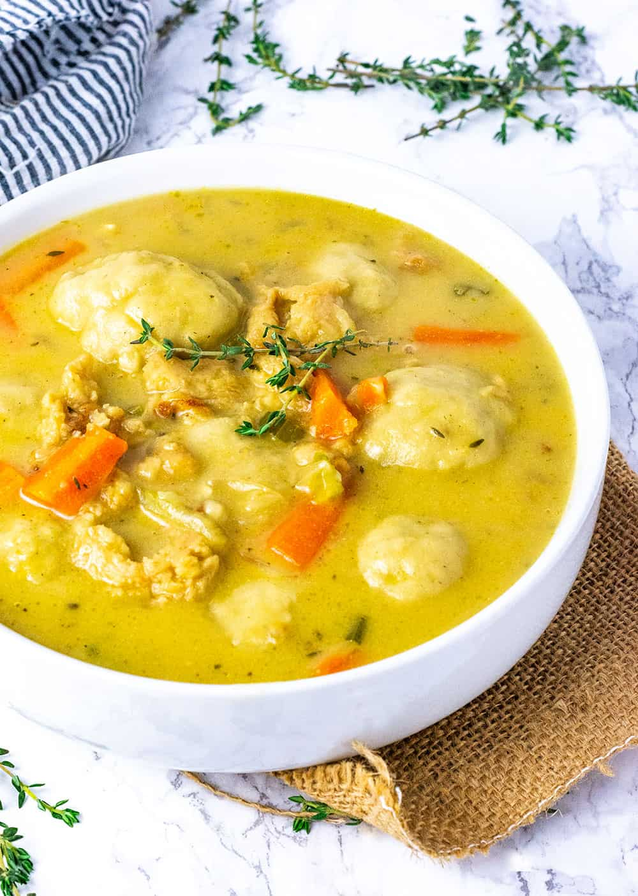

Chicken Dumpling Soup

Ingredients
- 4 tbsp. olive oil
- ground ginger
- cumin
- taragon
- fresh rosemary
- 2 bay leaves
- 4 garlic cloves, minced
- 1 chopped yellow onion
- 1 chicken breast
- 2 stalks chopped celery
- 2 chopped carrots
- 5 tbsp. salted butter
- 48 oz. chicken broth
- 2 cups heavy cream
- 2 cups all purpose flour
- 1 tbsp. baking powder
Directions
- In a large pot over medium heat, add the olive oil, chicken breast, ginger, taragon, and cumin.
- Once the chicken is cooked through, remove from the pot and the add onion, celery, and carrots to the pot.
- Once the onions are translucent, add the garlic and butter.
- Add the chopped chicken back into the pot, along with the chicken broth, 1/2 cup heavy cream, rosemary, and bay leaves. Bring to a simmer.
- To make the dumplings, mix the flour, rest of heavy cream, and baking power in a bowl with a rubber spatula. Form dough balls.
- Remove the bay leaves and rosemary from the pot, add in the dumplings, and cover for 10-15 minutes or until the dumplings double in size.
- Add salt, pepper, and spices to taste. I like to add in red pepper flakes for a kick!